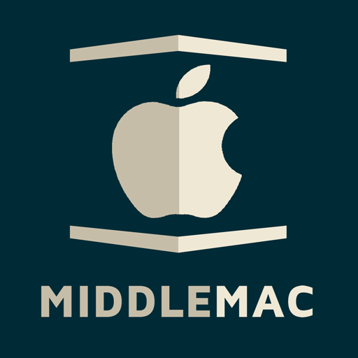

Middlemac Features
Middlemac makes it simple to do this in Terminal…
./middlemac target1 target2 target3
…and end up with versions of your helpbooks with all of the Apple-required files
in the Apple-required formats in the correct locations of your XCode build
directory. Simply build your help target, run your application, and find that
it just works!
At its simplest Middlemac offers:
- Write your help files with plain text using the
Markdown format (if you are reading this
file in a text editor, this is an example of Markdown).
- Single or multiple build targets, e.g., your
pro
target can include content specific to the professional version of your
application.
- Features support for each build target, e.g. each of
your build targets can specify whether or not they support specific features,
and this content will be included or excluded as your needs require.
- A low learning curve if you’re a developer.
- A set of conventions and tools that make automatic tables of contents,
automatic sections, and automatic behavior effortless to implement.
- Partials, helpers,
and built-in methods that make your static
help documents appear more dynamic while
keeping yourself DRY.
- A basic, Apple-like CSS stylesheet and set of templates that can be used as-is
or easily tweaked to suit your needs.